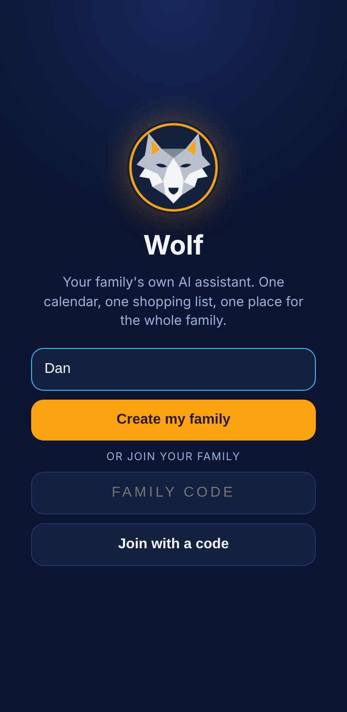
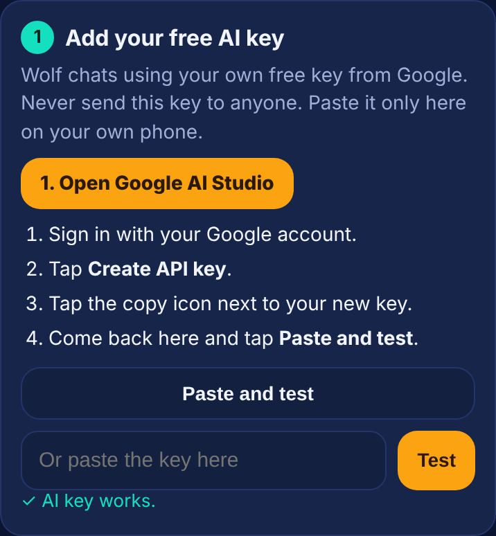
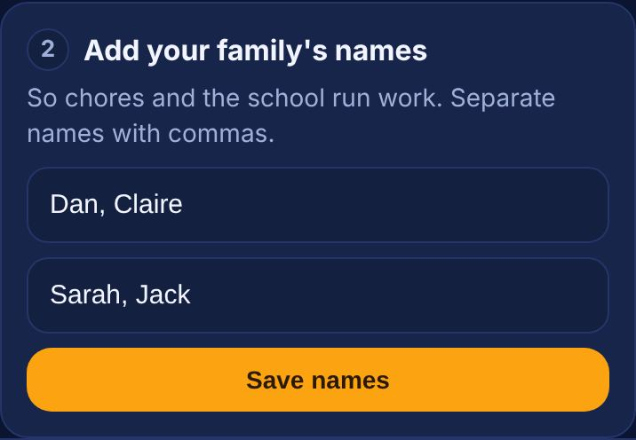
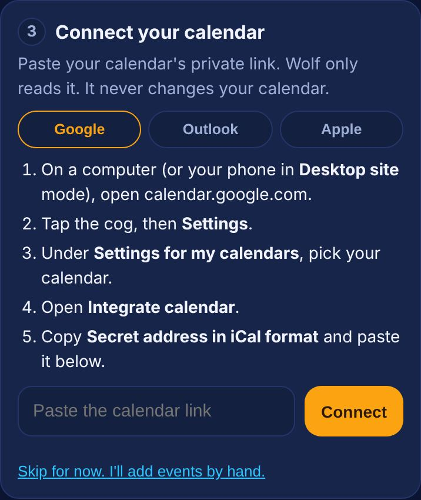
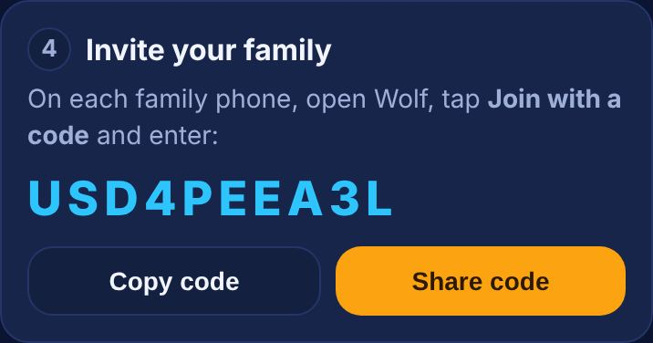
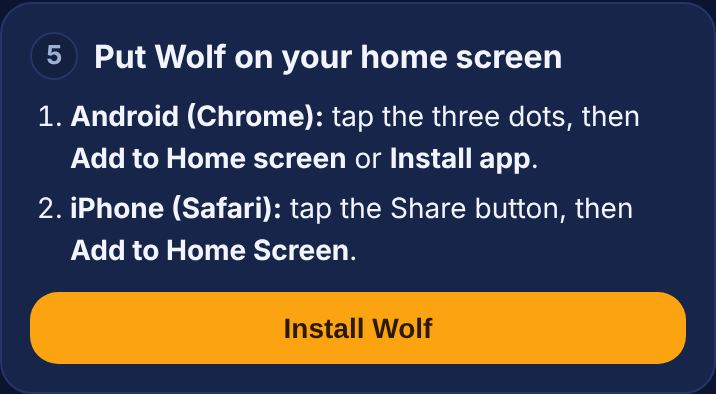
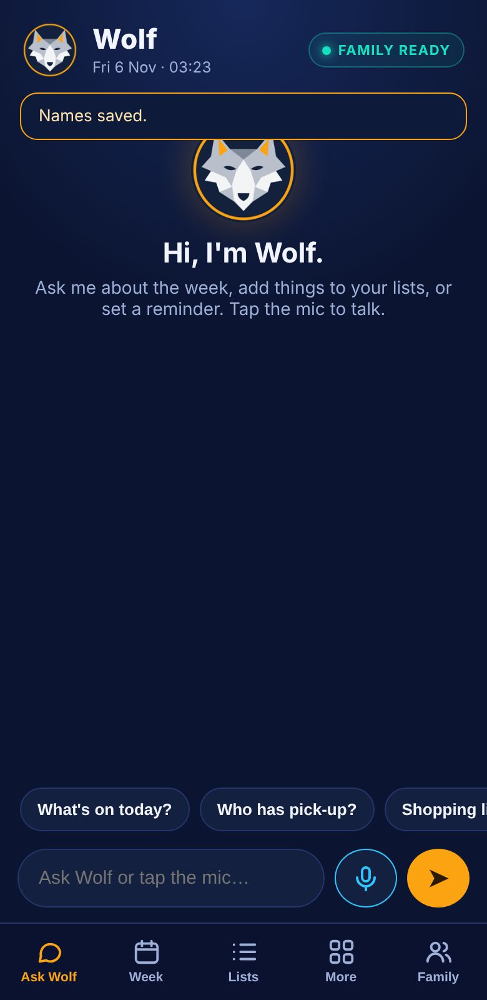

Wolf set-up guide
Like setting up a new phone. Do the steps in order. It takes about 10 minutes. You do every login and password yourself. We never ask for them and never see your family's data.
- Never send anyone your AI key or calendar link, including us.
- If you ever email us a screenshot, hide your key and link first.
1 Create your family
- Open Wolf on your phone.
- Type your first name and tap Create my family.

2 Get your free AI key
Wolf talks using your own free key from Google. This is what keeps Wolf free to run.
- In Wolf, tap Open Google AI Studio. Sign in with your Google account.

- Tap Create API key.

- Tap the copy icon next to your key.

- Go back to Wolf and tap Paste and test. You should see a green tick.

3 Add your family's names
- Type the adults, then the children. Separate names with commas.
- Tap Save names.

4 Connect your calendar (optional)
Wolf only reads your calendar. It never changes it. You can skip this and add events by hand.
Google Calendar
- On a computer (or your phone in Desktop site mode) open calendar.google.com.

- Click the cog, then Settings.

- Under Settings for my calendars, pick your calendar.

- Open Integrate calendar.

- Copy Secret address in iCal format.

Outlook
- Open Outlook on the web, then Settings, then Calendar.

- Choose Shared calendars.

- Under Publish a calendar, pick your calendar and Can view all details, then Publish.

- Copy the ICS link.

Apple (iCloud)
- Open iCloud.com and go to Calendar.

- Click the share icon next to your calendar.

- Turn on Public Calendar and copy the link.

Then in Wolf, paste the link and tap Connect.

5 Invite your family
- In Wolf, step 4 shows your family code. Tap Share code.
- On each family phone, open Wolf, tap Join with a code and enter it.

6 Put Wolf on your home screen
- Android (Chrome): tap the three dots, then Add to Home screen or Install app.

- iPhone (Safari): tap Share, then Add to Home Screen.


7 Try it
- Tap the mic and say "Add milk to the shopping list".
- Open Lists. Milk should be there.

If something doesn't work
"That key did not work"
Copy the key again, with nothing else. Make sure you copied the whole key. If it still fails, make a new key in Google AI Studio and try that."We could not read that calendar link"
Copy the whole link again. It must start with https:// and come from Google, Outlook or iCloud. Use the secret or published link, not the normal calendar address."That code was not found"
Check the code, with no spaces. Ask the person who made the family for the code on their Family tab. If you made a new code, the old one stops working.The mic doesn't work
Allow the microphone for this site in your browser settings, or use the mic on your keyboard."Your free AI limit is used up"
The free key has a daily limit. Try again later. If you use Wolf a lot, get your own paid AI plan.Reminders
Reminders sound and buzz while Wolf is open on your phone. They don't wake a phone where Wolf is closed.Still stuck after trying these? Email us from the Family tab. We reply by email when we can. This guide is provided as is. Your legal rights are not affected.